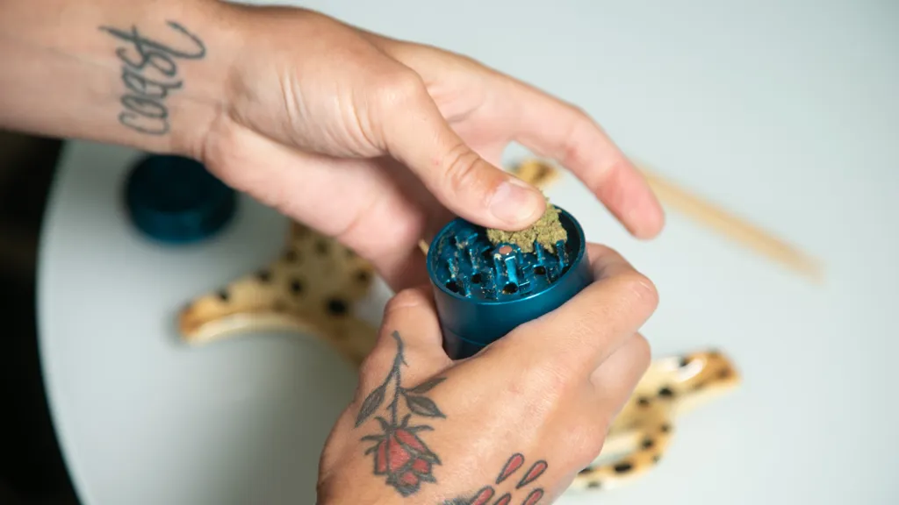
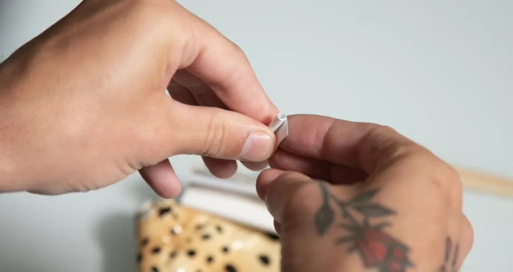
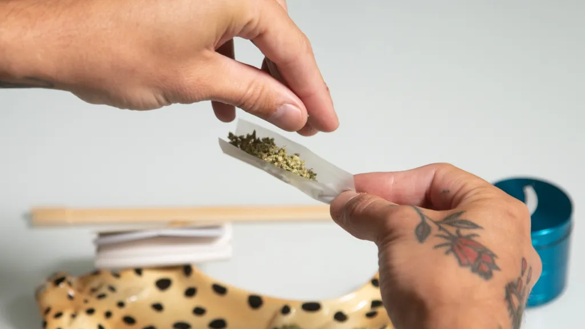
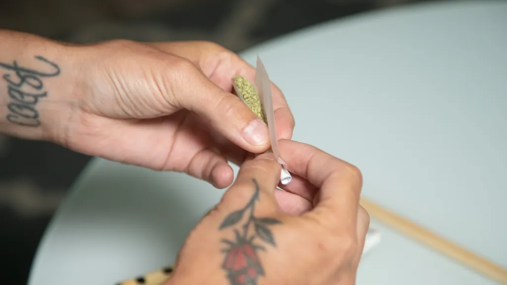
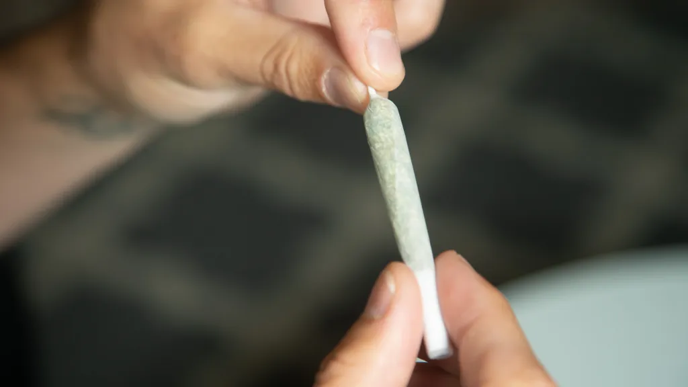
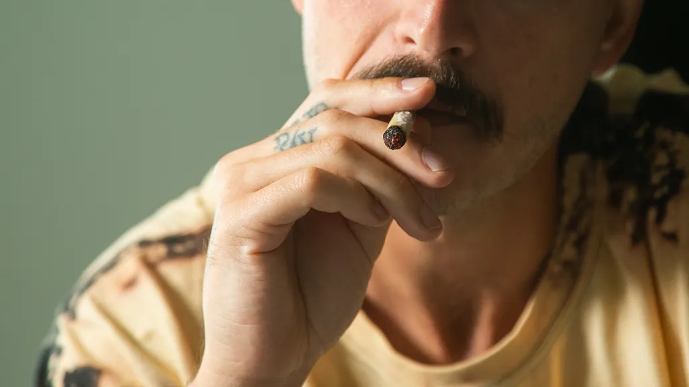

To roll a cannabis joint, you'll need to assemble a handful of essential materials:
Time needed: 5 minutes
Use a grinder to separate and evenly grind up the flower. A grinder produces a consistent size and texture, which provides a smoother, more even smoke. If you don't have a grinder, pick the bud apart with your fingers. Work gently to minimize damage to the cannabis trichomes as you remove any stems or seeds and make the pieces more or less the same small size.
Many smoke shops sell pre-made crutches to serve as the mouthpiece of a joint. While crutches aren't essential, they help reinforce the mouthpiece and make a joint easier to hold. Crutches also boost the airflow through a joint and minimize the risk of burning your lips or inhaling tiny bits of marijuana during a hit. To make a crutch, grab a piece of thick paper or cardstock and rip off a rectangle-shaped strip about half an inch wide (¾ inch if you're using king-size papers). Fold most of the paper into an accordion shape then wrap the last bit of paper around the accordion part. Business cards actually work great for making crutches. Glass and wooden crutches are great alternatives to paper and can be found at tobacco shops, head shops and some dispensaries. Crutches are also called filters or tips. Some people call them roaches but a roach is actually the last little charred bit of a smoked joint.
Lay the rolling paper on the tray with the adhesive side away from you. Position the crutch where you want the mouthpiece to be and sprinkle marijuana onto the paper in a column in line with the crutch. Evenly spread the flower throughout the joint and avoid overstuffing it.
To roll a cone joint, sprinkle less weed near the mouthpiece and more towards the tip, tapering as you move.
It's finally time to get rolling. Be sure the adhesive-coated side of the paper is away from you and pick up the cannabis-filled paper. Use your thumbs and index fingers to pinch the paper into a taco shape, sifting the paper back and forth to distribute the bud evenly and pack it down a bit. It's okay if some flower falls out — you can stuff it in later. Work the weed into a cylinder shape, not so loose that it will burn unevenly and not so tight that it will restrict airflow.
Twist the extra paper at the tip of the joint to seal everything shut.
Finally it's time to lightup your roll joint
